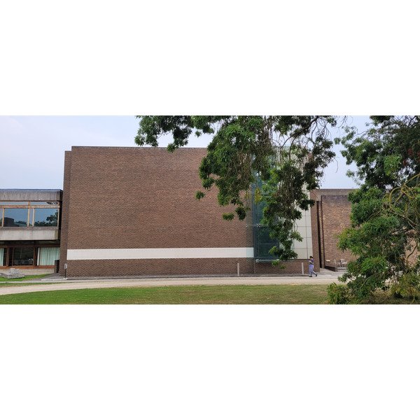
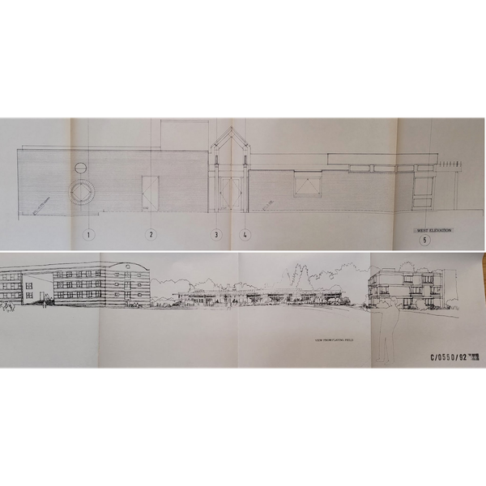
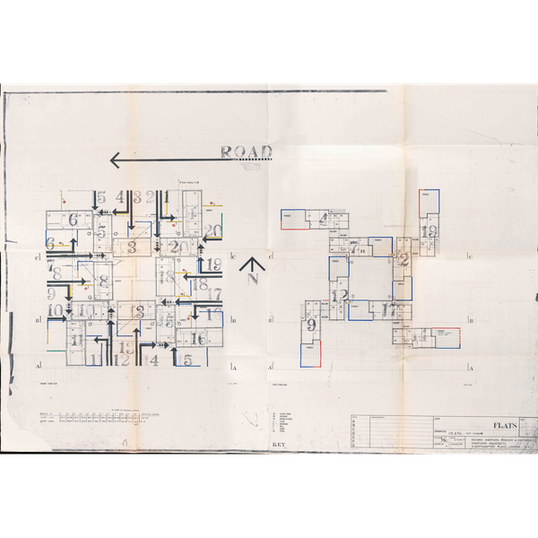
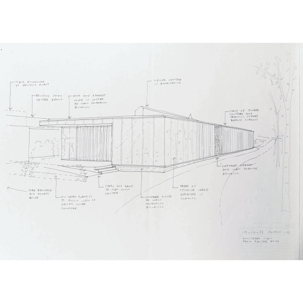

test
test
test
Info
ABOUT
This digital exhibition brings together, for the first time, a comprehensive survey of the history of art, design and architecture at Churchill College. The modernist design of the college’s first buildings, by Richard Sheppard and William Mullins, embodied the new institution’s forward-looking, scientific, technological outlook. Today, this utopian ethos has been combined with an acute awareness of the cost of technological activity on the natural environment. Consequently, this activity has been redirected towards the search for a more sustainable balance between building and ecology.
Moving across time from the energy-intensive concrete interlacing of Sheppard’s buildings, to the pre-fabricated ‘timber brutalism’ of 6a Architect’s Cowan Court (the college’s newest residential courtyard, built in 2016), the evolving architecture of Churchill traces a search for equilibrium between interior and exterior, building and landscape, body and environment. Considering this aspect of the college’s aesthetic history involves expanding our field of view from the much-studied main Sheppard Robson buildings — this exhibition thus highlights, in addition, both the landscape architecture of the college and the other buildings on the site. Furthermore, Churchill’s architecture is in intimate conversation with the art and furniture which reside within and surround these buildings.
Indeed, these artworks and furniture are integral participants in this search for architectural equilibrium. The modern art in the college’s collection, such as Dennis Mitchell’s sculpture Zelah , Robyn Deny’s Night Suite and prints by Louise Nevelson and Patrick Caulfield, reflect and emphasise the poetic dimension of this architectural balancing-act, and fundamental integration, between human body and ecological space. Furthermore, college-owned furniture by renowned Danish designer Hans J. Wegner reflects the search to unify ergonomics and aesthetic beauty.
This digital exhibition has been designed as a series of branching paths. Alongside each entry, three more in the right-hand tab will be randomly generated, each connected to the current entry in a different way. Each person’s experience of the exhibition will thus be unique, and indeed you are encouraged to draw your own series of connections and insights across the college’s vast aesthetic history, across space and across time. The exhibition is thus designed as a ‘walk’ in the sense of the term’s use in mathematical graph theory: each person will find a different walk through the vast, interconnected mesh of nodes forming Churchill’s aesthetic heritage.
We hope that students and college members who engage with this digital exhibition will gain an enriched knowledge of the architectural and artistic history of the college, and that this knowledge will imbue their built environment with a renewed interest and attractiveness, helping to make available the aesthetic repose this affords.
This digital exhibition was made possible with the generous support of the Churchill Summer Opportunities Fund, the Bill Brown Creative Workshops Fund, the Churchill Archives Centre, and the Møller Institute.
Copyright notice and take-down policy : All efforts have been taken to identify and secure permission to reproduce image from the relevant copyright holders, although this has not been possible in the case of extinct firms or untraceable individuals. If you own an image in this exhibition and can prove copyright ownership, please email archives@chu.cam.ac.uk if you wish to have the image taken down.
A Walk Through College; A Journey Through Time
Art, Architecture and Design at Churchill College, Cambridge, 1958-2024 ————————————
Click on any image to enter the exhibition



Click on any image to enter the exhibition. This exhibition is a full-screen experience. To exit full-screen mode, press 'esc'.
Home

ALL ENTRIES